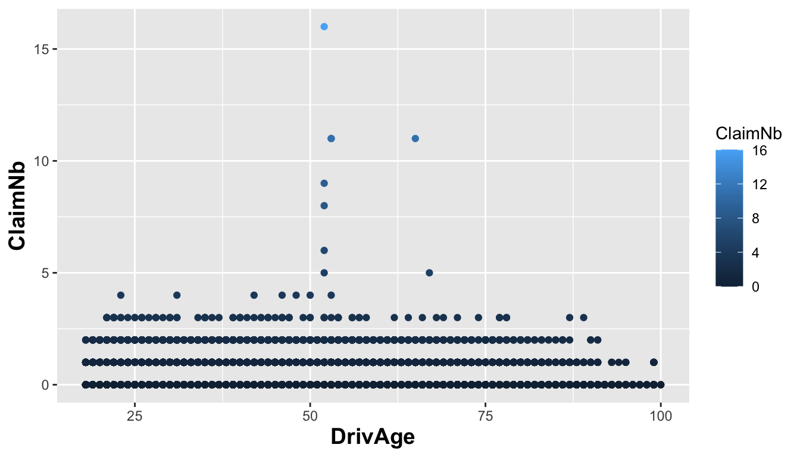
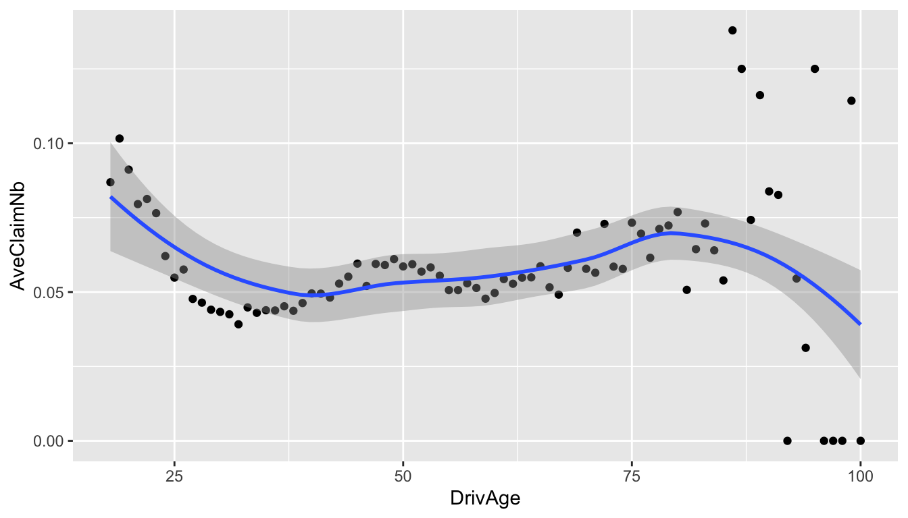
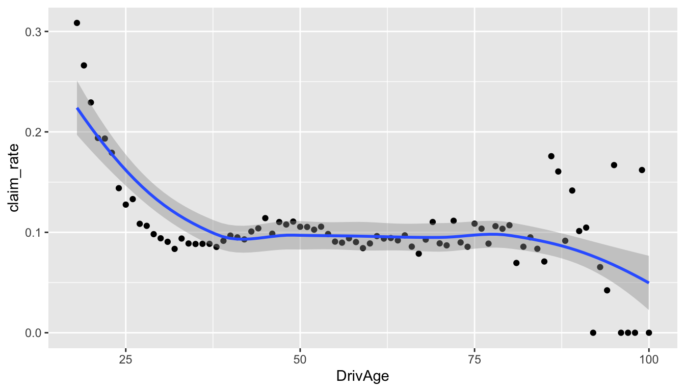
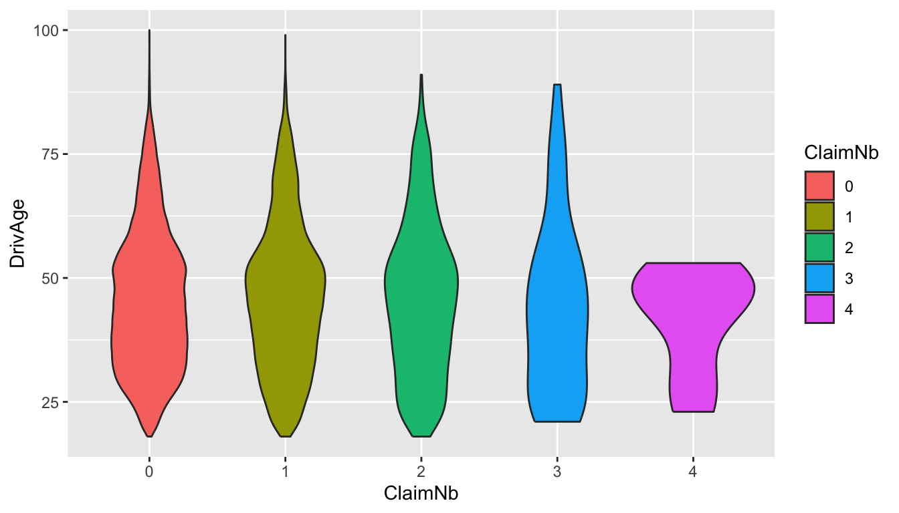
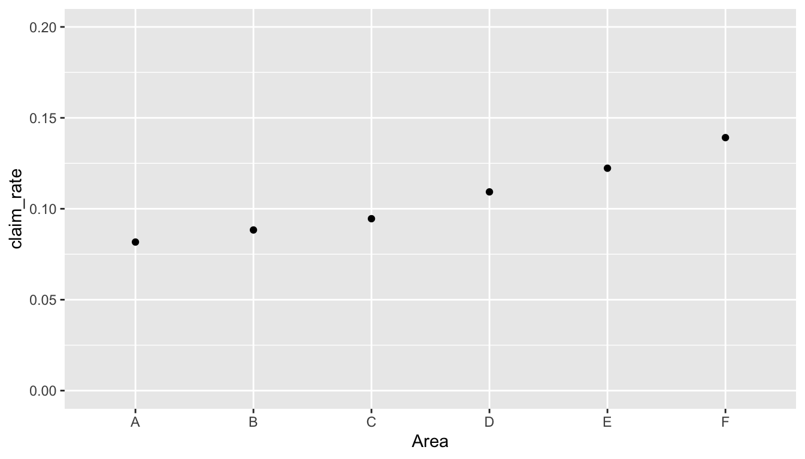
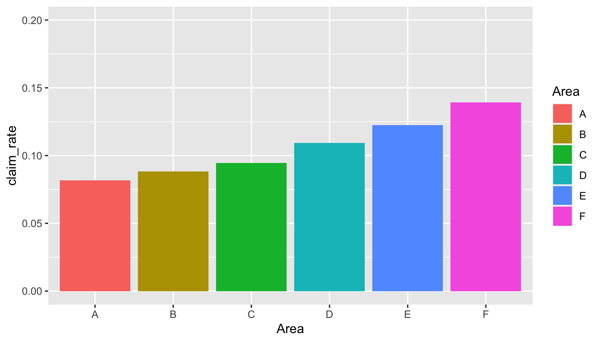

# Install required packages (run this once if needed)
install.packages("zoo")
install.packages("xts")
install.packages("sp")
install.packages("CASdatasets", repos = "http://cas.uqam.ca/pub/", type = "source")Lab: Data Visualisation
Actuarial Data Science - Open Learning Resource
Learning Objectives
- Learn how to use
tidyverseandggplot()for data visualisation.
Data Visualisation
Data Source
While it might be difficult to obtain data to address a specific research problem or answer a business question, it is relatively easy to obtain data to test a model or an algorithm for data analysis. In the modern era, datasets can be obtained from the Internet. The following is a list of some websites for obtaining real-world data:
UCI Machine Learning Repository. Maintains more than 400 datasets that can be used to test machine learning algorithms.
Kaggle. Includes real-world datasets used for data science competitions. Users can download data by registering an account.
DrivenData. Aims to bring cutting-edge practices in data science to solve some of the world’s biggest social challenges. Users can participate in data science competitions and download datasets.
Analytics Vidhya. Allows users to participate in and download datasets from practice problems and hackathons.
KDD Cup. The annual Data Mining and Knowledge Discovery competition organised by the ACM Special Interest Group on Knowledge Discovery and Data Mining. This site contains datasets from past competitions since 1997.
U.S. Government’s Open Data. Contains about 200,000 datasets covering a wide range of areas including climate, education, energy, and finance.
AWS Public Datasets. Provides a centralised repository of public datasets, including some very large datasets.
CASdatasets. A collection of datasets originally developed for the book Computational Actuarial Science with R (Charpentier 2014). The package now contains a wide variety of actuarial datasets.
Import Data
CASdatasets is R friendly, so we can download it by install.packages("CASdatasets", repos = "http://cas.uqam.ca/pub/", type="source"). After downloading, when you need this dataset, use library() function.
Before installing CASdatasets, make sure the required packages are installed (run the following code once if needed):
library(CASdatasets)
# ?CASdatasets # Description of this dataset
data(freMTPL2freq) # import datasets
data(freMTPL2sev)
freMTPL2freq$ClaimNb <- as.integer(freMTPL2freq$ClaimNb)Now the datasets freMTPL2freq and freMTPL2sev are successfully loaded. Have a look at these datasets first.
In the two datasets, risk features are collected for 677,991 motor third-party liability policies (observed mostly over one year). In addition, we have claim numbers by policy as well as the corresponding claim amounts. freMTPL2freq contains the risk features and the claim numbers, while freMTPL2sev contains the claim amounts and the corresponding policy IDs.
freMTPL2freq contains 12 columns:
IDpol: The policy ID (used to link with the claims dataset).ClaimNb: Number of claims during the exposure period.Exposure: The period of exposure for a policy, in years.Area: The area code.VehPower: The power of the car (ordered categorical).VehAge: The vehicle age, in years.DrivAge: The driver age, in years (in France, people can drive a car at 18).BonusMalus: Bonus/malus, between 50 and 350 (<100 means bonus, >100 means malus in France).VehBrand: The car brand (unknown categories).VehGas: The fuel type of the car (Diesel or regular).Density: The density of inhabitants (number of inhabitants per km²) in the city where the driver lives.Region: The policy regions in France (based on a standard French classification).
freMTPL2sev contains 2 columns:
IDpolThe occurence date (used to link with the contract dataset).ClaimAmountThe cost of the claim, observed at a recent date.
Task 1: How to understand the relationship between claim frequency and driver age?
First, we create a figure using the code introduced in the lecture materials.
library(tidyverse)
ggplot(data = freMTPL2freq) +
aes(x = DrivAge) +
aes(y = ClaimNb) +
aes(colour = ClaimNb) +
geom_point() +
theme(axis.title = element_text(size = 14, face = "bold"))
It seems that Figure 1 is not very informative. Why?
In practice, the claim frequency for most policies is 0. When we create a plot in this way, many data points appear at the bottom level (0). The number of observations is also large (678013 observations), which makes it difficult to recognise the pattern from so many points.
Next, we plot the average ClaimNb for each DrivAge. This requires some code you have not learned in the lecture yet, but it is helpful in this case.
freMTPL2freq %>%
group_by(DrivAge) %>%
summarise(AveClaimNb = mean(as.double(ClaimNb))) %>%
ggplot(aes(x = DrivAge, y = AveClaimNb)) +
geom_point() +
geom_smooth()
From Figure 2, we can now see a clearer pattern. It suggests that younger drivers below 25 and older drivers around 80 are more likely to make a claim. However, is this the full story?
In general insurance, it is common to calculate
\text{Claim Rate}_{age}= \frac{\sum_i\text{ClaimNb}_{age,i}}{\sum_i \text{Exposure}_{age,i}},
where i represents the ith policyholder at this age. Claim rate tells us the number of claims per unit of exposure (year), which removes the effect of different exposure periods. Now let us see the relationship between claim rate and DrivAge.
freMTPL2freq %>%
group_by(DrivAge) %>%
summarise(claim_rate = sum(as.double(ClaimNb)) / sum(Exposure)) %>%
ggplot(aes(x = DrivAge, y = claim_rate)) +
geom_point() +
geom_smooth()
From Figure 3, we can see that younger drivers appear to have a higher claim rate, while older drivers appear to have a lower claim rate.
Here is another informative figure called a violin plot. What can you learn from this plot?
# Violin plot: DrivAge vs number of claims
freMTPL2freq %>%
filter(ClaimNb < 5) %>%
mutate(ClaimNb = as.factor(ClaimNb)) %>%
ggplot(aes(ClaimNb, DrivAge)) +
geom_violin(aes(fill = ClaimNb))
Task 2: How to understand the relationship between claim frequency and area?
Task 2 is slightly different from Task 1 because Area is a factor variable, while DrivAge is an integer variable.
str(freMTPL2freq)'data.frame': 678013 obs. of 12 variables:
$ IDpol : num 1 3 5 10 11 13 15 17 18 21 ...
$ ClaimNb : int 1 1 1 1 1 1 1 1 1 1 ...
$ Exposure : num 0.1 0.77 0.75 0.09 0.84 0.52 0.45 0.27 0.71 0.15 ...
$ VehPower : int 5 5 6 7 7 6 6 7 7 7 ...
$ VehAge : int 0 0 2 0 0 2 2 0 0 0 ...
$ DrivAge : int 55 55 52 46 46 38 38 33 33 41 ...
$ BonusMalus: int 50 50 50 50 50 50 50 68 68 50 ...
$ VehBrand : Factor w/ 11 levels "B1","B10","B11",..: 4 4 4 4 4 4 4 4 4 4 ...
$ VehGas : chr "Regular" "Regular" "Diesel" "Diesel" ...
$ Area : Factor w/ 6 levels "A","B","C","D",..: 4 4 2 2 2 5 5 3 3 2 ...
$ Density : int 1217 1217 54 76 76 3003 3003 137 137 60 ...
$ Region : Factor w/ 21 levels "Alsace","Aquitaine",..: 21 21 18 2 2 16 16 13 13 17 ...First, we try a similar approach to Task 1. Although we can get some information from Figure 5, it is not very straightforward because Area is categorical.
freMTPL2freq %>%
group_by(Area) %>%
summarise(claim_rate = sum(as.double(ClaimNb)) / sum(Exposure)) %>%
ggplot(aes(x = Area, y = claim_rate)) +
geom_point() +
coord_cartesian(ylim = c(0, 0.2)) # set the axis limits
A better choice in this case is to use a bar plot for the categorical variable. Now it is clearer to compare the claim rates across different areas.
freMTPL2freq %>%
group_by(Area) %>%
summarise(claim_rate = sum(as.double(ClaimNb)) / sum(Exposure)) %>%
ggplot(aes(x = Area, y = claim_rate, fill = Area)) +
geom_col() +
coord_cartesian(ylim = c(0, 0.2)) # set the axis limits
References
Charpentier, Arthur. 2014. Computational Actuarial Science with r. CRC press.